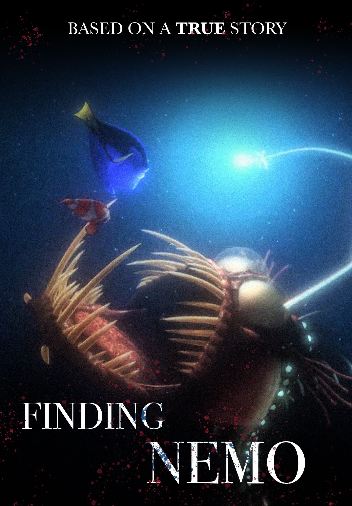
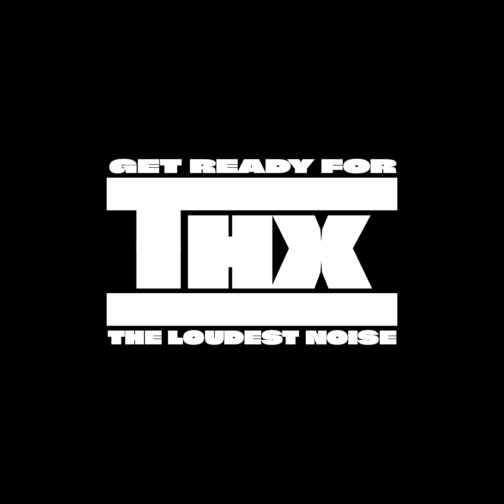
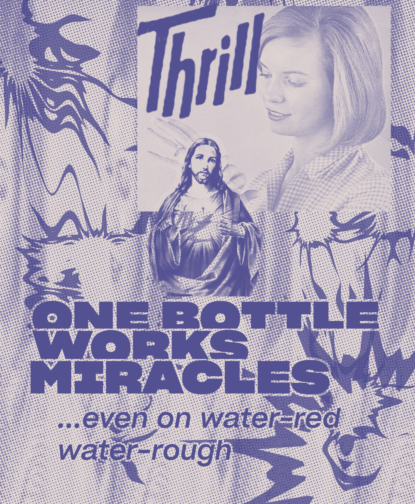
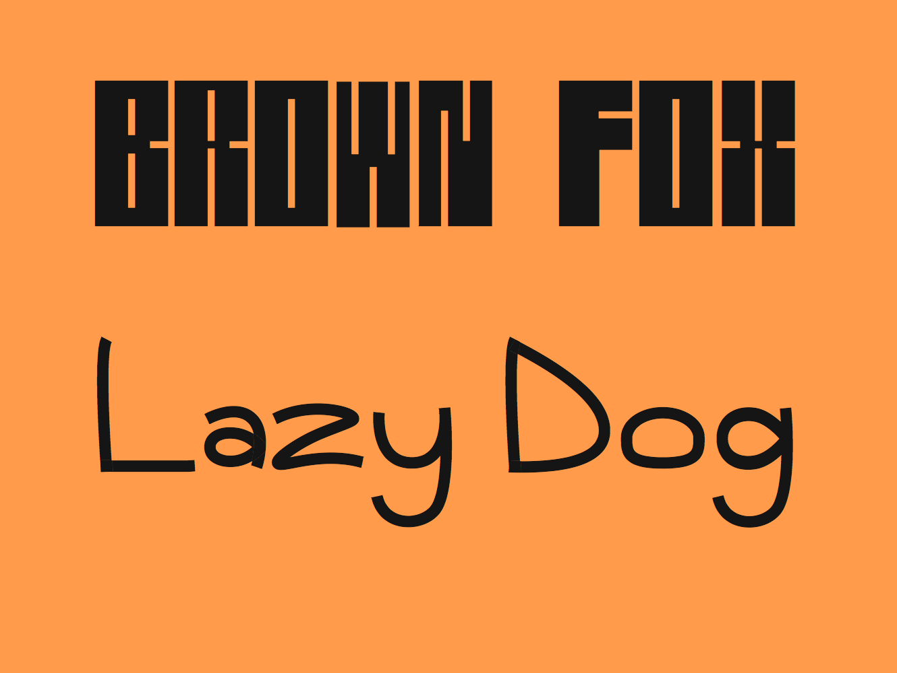

My Portfolio
Reflection EssayShort Reflections
1. An example of how you made a choice related to genre or audience.
I redesigned this Finding Nemo poster in the genre of horror, taking inspiration from “true” horror films like Annabelle and The Conjuring. I used common design tropes in these movie posters like serif text, dark imagery, and a foreboding image. I intended it to be humorous for the audience, given the actual family-friendly plot of the film. If I were to recreate this poster in some other genre, I would probably do a true crime movie or show. I think that the title and plot could allow for an easy transition. The effect would honestly be more cohesive and comedic to the audience. The name “Finding Nemo” hints at a bit of a mystery and the true crime genre depends on some sort of mystery aspect to function. If I were to design this poster for someone who knew nothing about the topic (or an actual viewer of the film), I would definitely switch the theme around to all around more up-beat and use brighter colors, and thick sans-serif fonts, typical to the family movie genre.
2. An example of how you made a choice related to color, fonts, captions, scale, or other aspects of the visual mode.
For this THX logo redesign, I focused on typography to convey the message. The initial logo is entirely text-based, apart from a dividing barrier/border on the the letters. I wanted to keep that idea, but play around with font thickness to convey the bold noise presented in THX’s branding. I chose Sharp Grotesk Black 15 for the main logotype and the same font but 20 for the supporting text. I feel like this is one of the boldest, most aggressive sans-serifs on the market and that it fit the noise of THX perfectly. I modified the scale of the logotype as well, making it larger and ultimately more eye-catching. If I were to make this one again, I would maybe use a wider font for the logotype to visually depict the drawn out noise that accompanies it. I also played around with color initially, and the only suitable change I saw would be inverting the colors, which could give a more minimal or brutal feeling.
3. An example of how you made a choice related to comparing one thing to another.
In the advertisement redesign assignment, I made the comparison of the product’s miracle capabilities to the miracles performed by Jesus Christ in the Bible. It isn’t explicitly stated, but his picture appears right in the middle of the document. I made this comparison for two reasons, the first and primary one being that it is absurdly funny. It is unexpected to see any pictures of Jesus in every day life, and especially not in a soap advertisement. The second reason was to appeal to what I imagined the audience of the time to be: probably American and Christian. Even if you didn’t believe in Jesus, you could understand the reference and that alone would reenforce the advertisement’s claims. If I revised the work to be more “holy” in content or color, I think that the comparison would work better. However, it is difficult to take risks when designing with religious figures as the risk of offending the audience is always present, especially when working for a grade.
4. An example of something that frustrated you or took a larger amount of time than you would have liked.
I’ve mentioned my struggles with this assignment before, and this one definitely frustrated me. I just took too much time trying to get the exact sound that I wanted and I’m still not really satisfied with the product. It is so hard for me to just imagine a sound and somehow produce it compared to imagining a website layout or poster and then creating it. Also, complexity was a problem for me, and I feel as if certain sounds force other ones to the background, nearly inaudible. I overcame my struggles by eventually just finding sounds that sort of fit my own criteria and working from there, tweaking them only slightly as I’m still a novice in sound design. I knew it was time to move on when I literally didn’t know what to do next/hit a creative roadblock. I learned that sound design is a way different type of design than graphics and the thinking process alone is challenging for me personally.
5. An example of something you are particularly proud of.
The work I am the most proud of is the skills assignment font project. Typography has always been something of an obsession for me, but my previous work has only been in single word designs and mostly just single letters. Being able to look at the big picture, learn professional grade tools, and design and build something actually functions was incredibly satisfying. Once the type was built, the possibilities were literally endless, and just playing around with letter combinations was a true delight. This project will always stick out in my mind as the first step into the world of font making and I cannot stress enough how proud I am to have made an actual functioning font file. In the future, I want to take my design process and incorporate more sketching and iterations as well as real experimentation. I was forced into experimenting since this was my first try, but I want to take common typography tropes and remix them in unexpected ways in the future.